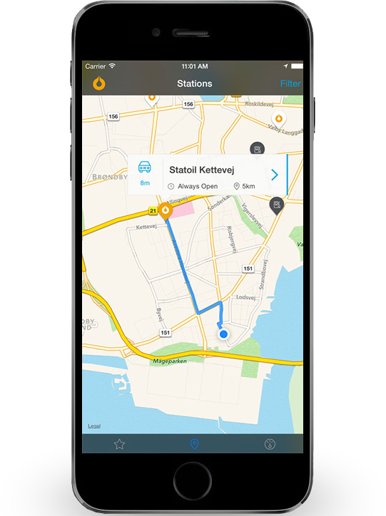
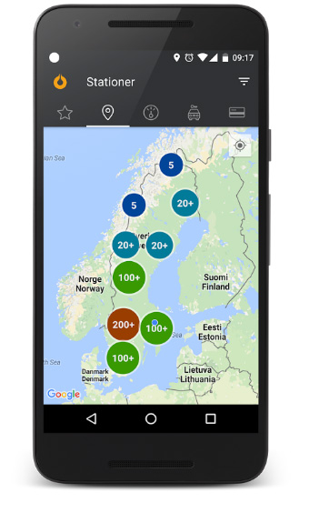

In Apple Store

In Google Play
The Statoil app is a handy tool when on the road. You can quickly and easily locate Statoil stations available in your area. We also help you keep track of your Statoil EXTRA rebates, deals and purchases directly in the app.